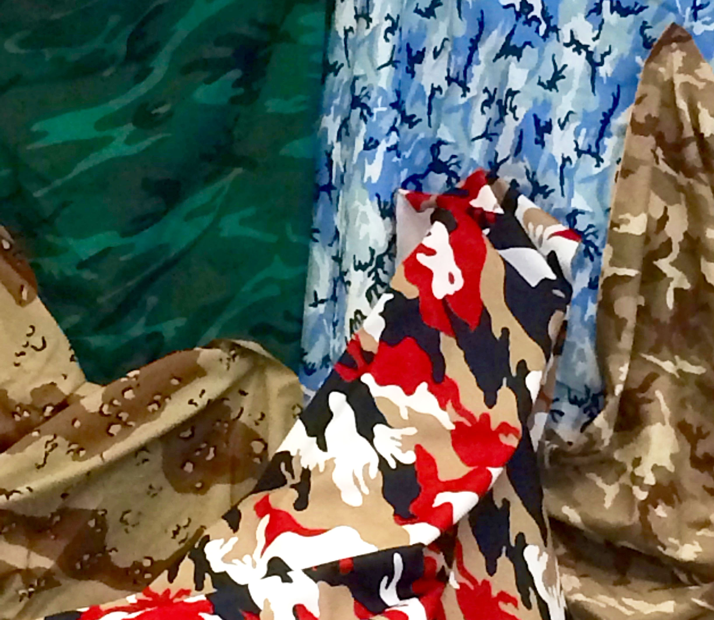

Irene Hernandez
Paintings
Hidden
2015
Acrylic on Paper
18 in x 24 in

This project intended to challenge how we see color and how it affects folds. Colors must match as close as it can to the real pattern.